13 mars 2024
Webinaire Club Utilisateurs
Eric Jeangirard
Anne L'Hôte


📋 Sommaire
🆠Résultats
- Résultats publications et thèses
- Résultats données et code
- Résultats en santé
- Baromètres d'établissements et de laboratoires
🔠Perspectives
- DataCite
- Works magnet
🆠Résultats
📜 Résultats publications
📜 Résultats publications
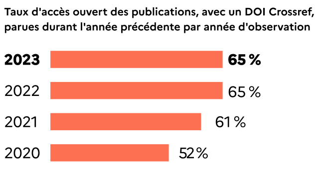
📜 Résultats publications
- 65 % des 160 000 publications scientifiques françaises parues en 2022 sont en accès ouvert en décembre 2023
- Taux stable par rapport à l'année précédente (2022)
📜 Résultats publications

📜 Résultats publications
- Variation significative des niveaux d'ouverture des publications d'une discipline à l'autre
- Traduit des pratiques et des usages différents entre communautés scientifiques
- Exemple : mathématiques 79 % et sciences sociales 52 %
- Taux d'ouverture quasi stable au sein de chaque discipline
📜 Résultats publications
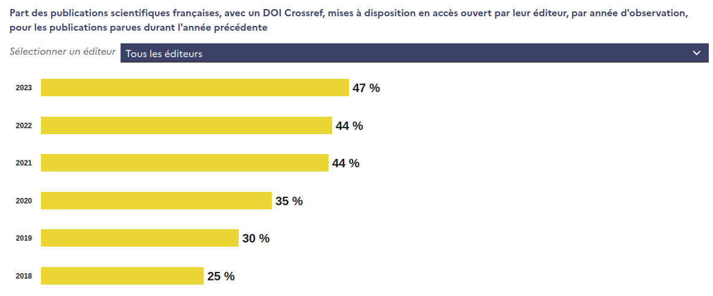
📜 Résultats publications
- 📈 Augmentation du mode d'ouverture via la plateforme éditeur (+ 3pts)
📜 Résultats publications

📜 Résultats publications
- 📉 Recul du mode d'ouverture via archive ouverte (- 3pts)
- Signal faible car le taux d'accès ouvert aux publications reste quasiment stable et les contributions des deux voies d'ouverture sont à présent à parité
- Changement de régime dans les dynamiques internes entre les voies d'ouverture
📜 Résultats publications
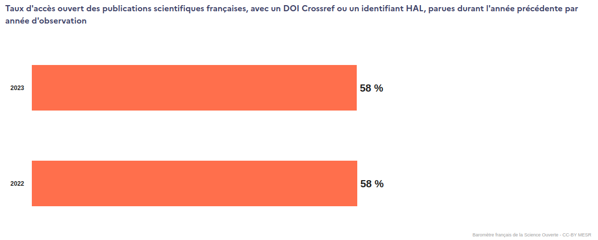
📜 Résultats publications
- ⏱️ Suivi de HAL depuis 2 ans donc peu d'historique
- 📉 Oui, ajouter HAL fait diminuer le taux d'ouverture ! (- 7pts)
- Rappel, pour tous les graphiques des publications, il est possible d'activer la prise en compte de HAL dans le périmètre
- Rappel, pour chaque collection HAL, un baromètre local est imédiatement disponible via le Studio, en saisissant le code collection HAL en temps qu'identifiant établissement
📠Résultats thèses de doctorat
📠Résultats thèses de doctorat

📠Résultats thèses de doctorat
- Les thèses soutenues en 2021 sont en libre accès à 77 %
- Taux stable depuis 2017
- Recul du taux de partage de l'année de soutenance 2022 en raison d'embargos encore en cours
📠Résultats thèses de doctorat

📠Résultats thèses de doctorat
- Forte disparité entre les disciplines
- Exemple: mathématiques 94 % et droit 40 %
🧑‍💻 Résultats données et code
💾 Résultats données
💾 Résultats données

💾 Résultats données
- 💾 La part des publications partageant un jeu de données augmente à 22 % (+2 pts)
🧑‍💻 Résultats code ou logiciels
🧑‍💻 Résultats code ou logiciels
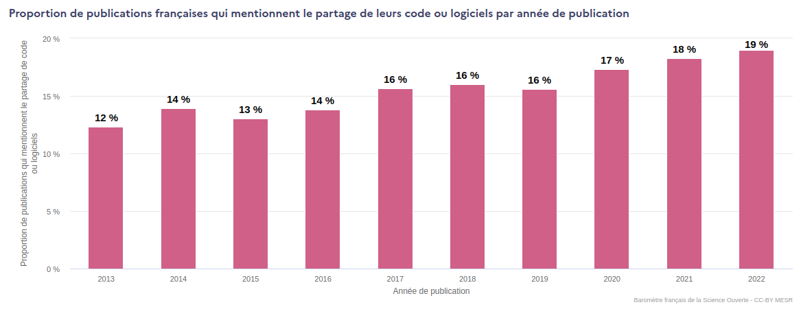
🧑‍💻 Résultats code ou logiciels
- 🧑‍💻 La part des publications partageant le code produit reste stable, légèrement inférieur à 20 %
🩺 Résultats en santé
🩺 Résultats en santé
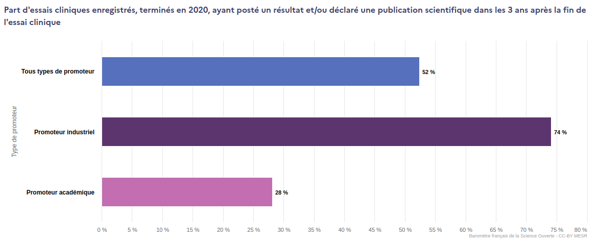
🩺 Résultats en santé
- 🧪 En santé, la part des essais cliniques qui partagent leurs résultats dans les 3 années après la fin de l'essai reste faible (52 %)
- Forte disparité entre les types de promoteurs industriel et académique
🩺 Résultats en santé

🩺 Résultats en santé
- 📈 Cet indicateur évolue à la hausse passant de 46 % en 2014 à 52 % en 2020 (+ 6 pts)
- 📈📈 Progression plus forte pour les promoteurs académiques (+ 10 pts)
🔠Baromètres d'établissements et de laboratoires
🔠Baromètres d'établissements et de laboratoires
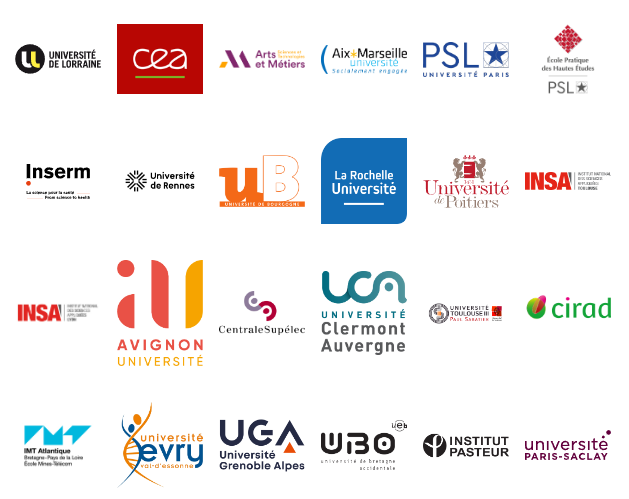
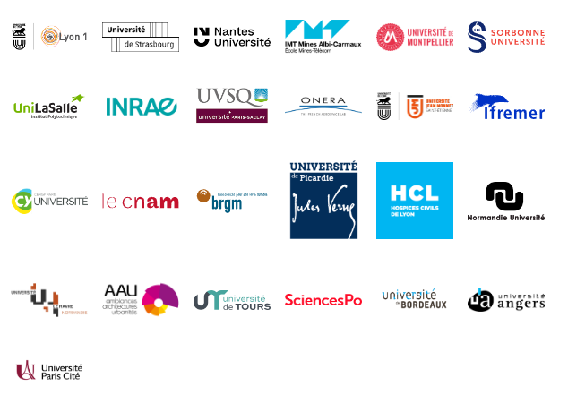
🔠Baromètres d'établissements et de laboratoires
- ⛪ 201 baromètres
- dont 49 sont référencés sur notre page dédiée (nous contacter par email pour toute demande d'ajout)
- 233 demandes de création / actualisation de baromètre en 2023
- 240 personnes au sein de notre Club Utilisateurs
- Initiative propre aux SHS au sein de cette communauté
🔠Perspectives
🪃 DataCite
- 🚜 Moissonnage de Datacite
- 🏗️ Définition du corpus des DOI DataCite français
🧲 Works magnet
- 🚧 Travail en cours de développement
- 🚰 Sources : BSO, Datacite & OpenAlex
- 📢 Présentation aux JABES 2024
- 🧲 Trouver ses publications, ses jeux de données et soumettre des corrections à OpenAlex
🧲 Chercher
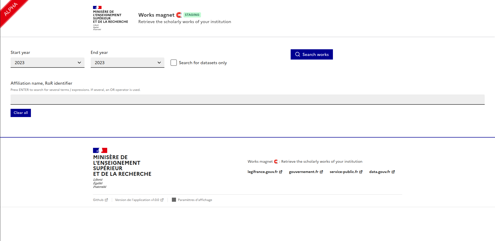
🧲 Chercher par affiliation
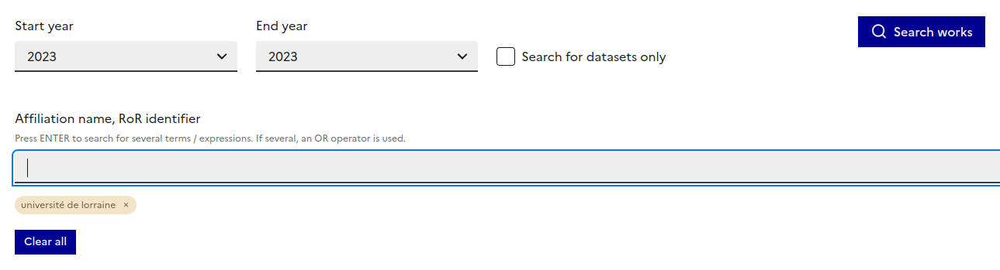
🧲 Chercher par RoR
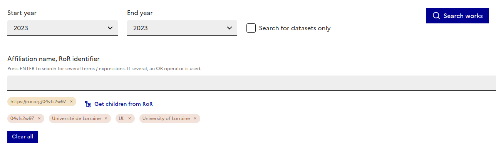
🧲 Chercher par RoR et ses descendants

🧲 3 missions
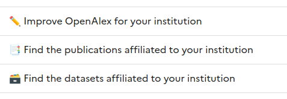
🧲 Trouver ses affiliations
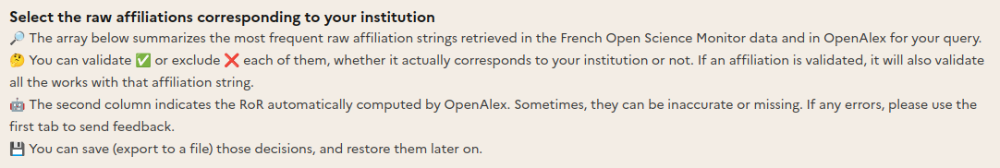
🧲 Trouver ses affiliations
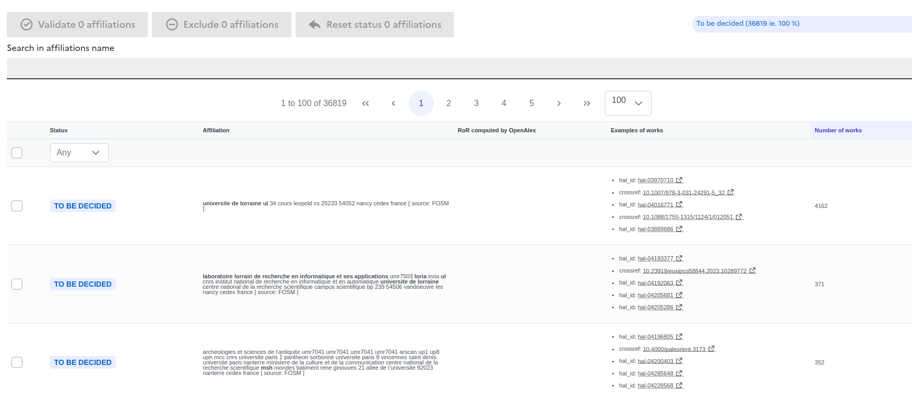
🧲 Trouver ses publications
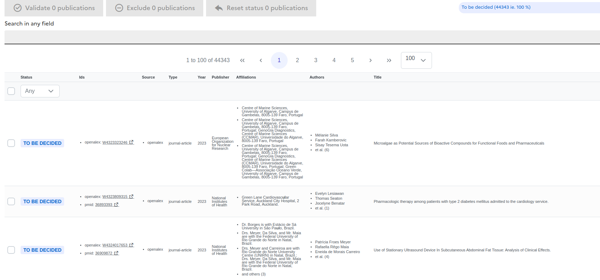
🧲 Valider ses affiliations
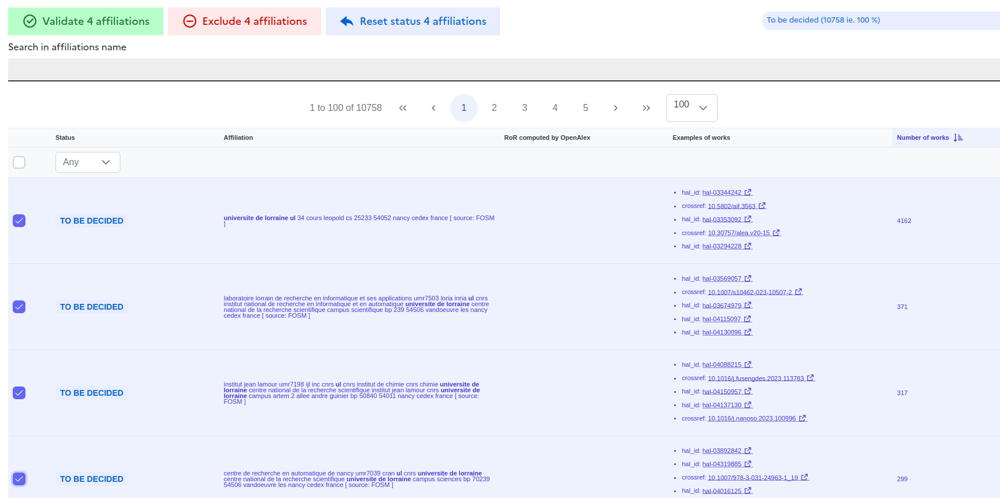
🧲 Valider ses affiliations
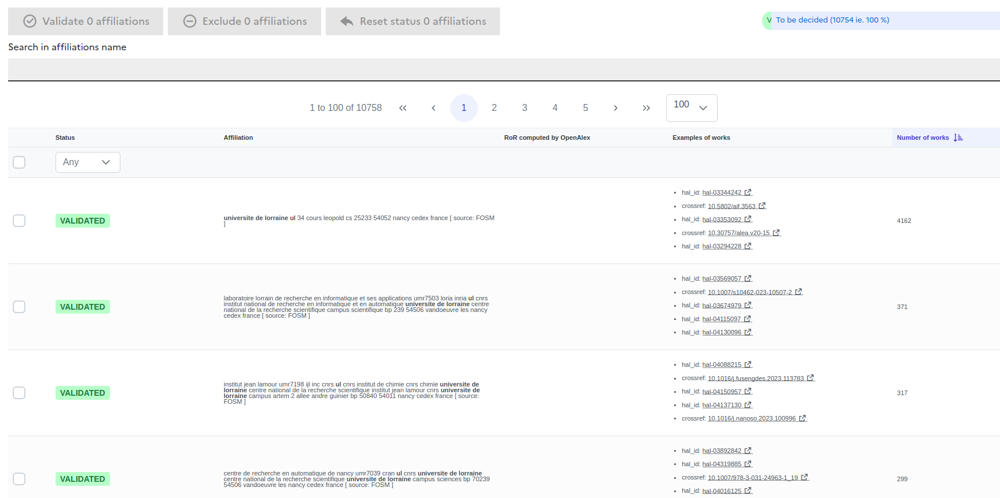
🧲 Valider ses publications
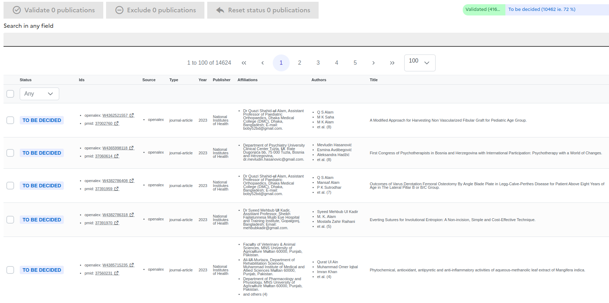
🧲 Valider ses publications
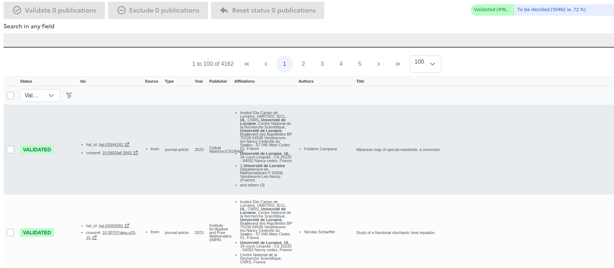
🧲 Trouver ses affiliations
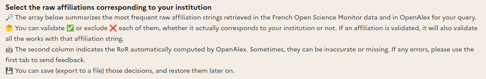
🧲 Trouver ses affiliations
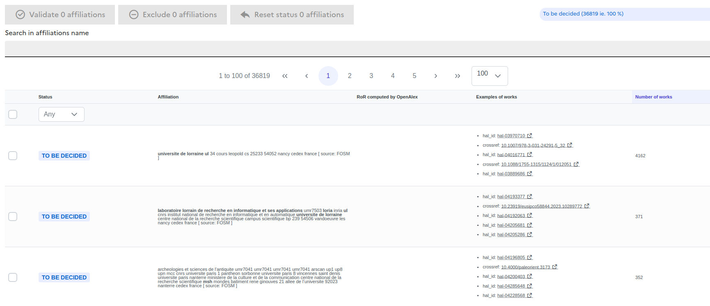
🧲 Trouver ses jeux de données
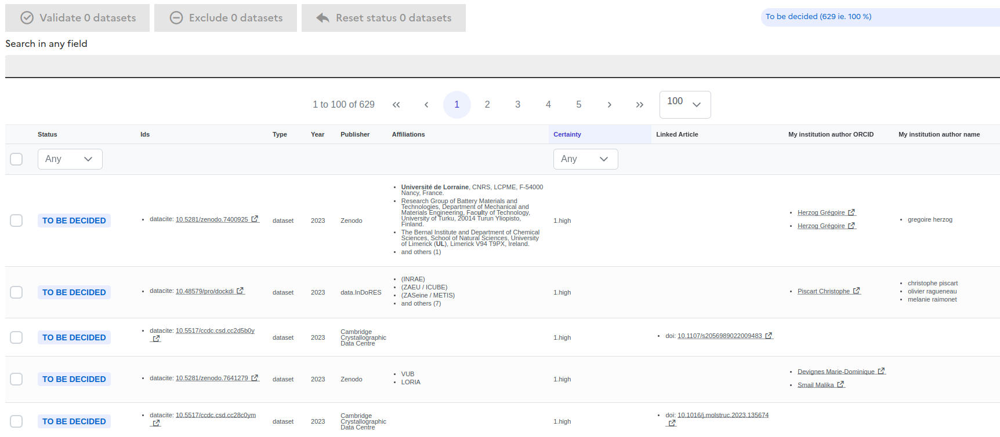
🧲 Trouver ses jeux de données
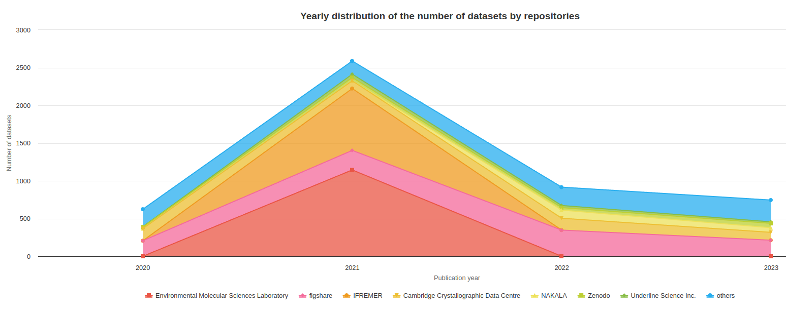
🧲 Soumettre des corrections à OpenAlex
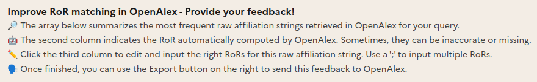
🧲 Soumettre des corrections à OpenAlex
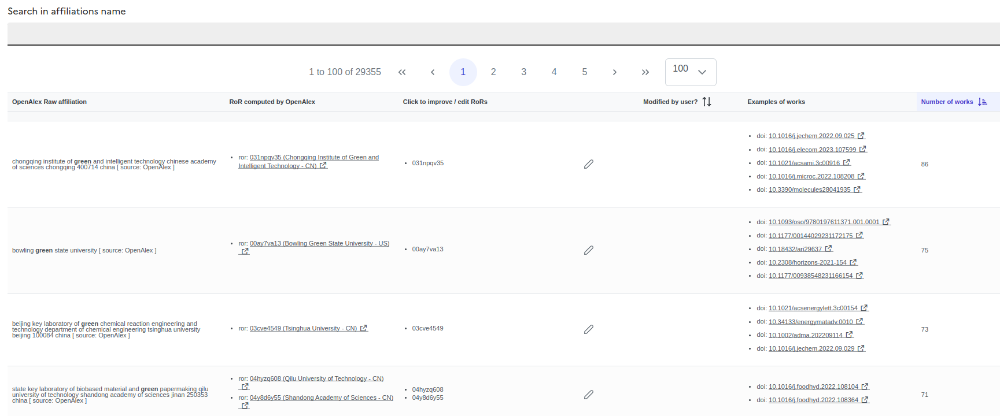
❔ Questions ?